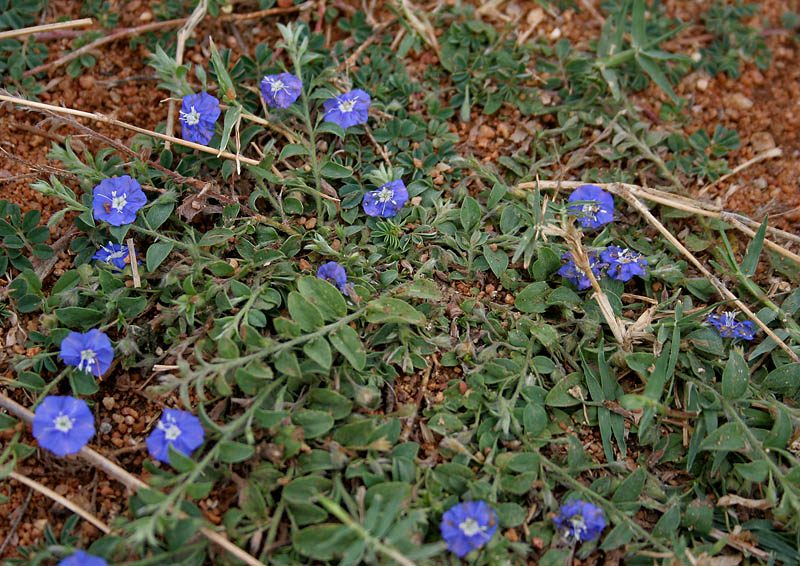

शंखपुष्पीShankhpushpi
Evolvulus alsinoides · Convolvulaceae · FLR-0154

- Scientific name
- Evolvulus alsinoides (L.) L.
- Family
- Convolvulaceae
- Hindi
- शंखपुष्पी
- Local names
- shankhpushpi, shankhapushpi, shankhavali, vishnukranta, dwarf morning glory
- Status here
- native
- Movement
- Resident, here all year
- IUCN
- not evaluated
- Review
- audited and independently read
When to look कब देखें
Present all year.
Uses and possibilities उपयोग और संभावनाएँ
“Traditional medicine” means a documented traditional use, not a claim that it works. Nothing on this page is medical advice.
Drawn from the documented uses in the profile below, where each is labelled traditional, current or a research lead. All uses →
शंखपुष्पी / Shankhpushpi
Evolvulus alsinoides (L.) L. — Convolvulaceae
शंखपुष्पी (द्वार्फ़ मॉर्निंग ग्लोरी) — एक छोटा, नम-प्रेमी जमीन पर फैलने वाला पौधा, जिसके नीले और गुलाबी फूल सुबह खिलते हैं और दोपहर तक बंद हो जाते हैं। आयुर्वेद में इसे मस्तिष्क और मन के लिए सबसे शक्तिशाली पौधों में से एक माना जाता है। संस्कृत में इसका नाम "शंखपुष्पी" का मतलब है "शंख (घोंघे के खोल) जैसे फूल वाला"। पूर्वी उत्तर प्रदेश के खेतों और बाग़ों में यह आम घास के साथ उगता है।
Quick Identification त्वरित पहचान
| Feature | Description |
|---|---|
| Plant habit | Small annual herb, 10–30 cm, spreading or trailing, branching from base |
| Leaves | Linear to elliptic, small (5–15 mm), opposite, entire margins, slightly hairy |
| Flowers | Small (6–8 mm), pale blue, pink, or whitish, funnel-shaped, opening in morning |
| Fruits | Small, round capsules, 4–5 mm, splitting into 2 seeds |
| Stem | Trailing, rooting at nodes, hairy |
| The test | Observe morning opening and afternoon closing of flowers |
Field tip: In a damp field or garden after the rains, look for a small, trailing herb with tiny blue or pink funnel flowers opening in the early morning. The flowers close by midday.
हिंदी — कैसे पहचानें: छोटा पौधा, नीले या गुलाबी फूल सुबह खिलते हैं, छोटी पत्तियाँ।
Morphology आकारिकी
Biometrics:
| Measurement | Range |
|---|---|
| Plant height | 10–30 cm |
| Leaf length | 5–15 mm |
| Leaf width | 1–4 mm |
| Flower diameter | 6–8 mm |
| Fruit diameter | 4–5 mm |
Stem and branches: Trailing, hairy, rooting at nodes, angular.
Leaves: Small, linear to elliptic, opposite, entire margins.
Flowers: Actinomorphic, funnel-shaped, with 5 fused petals, calyx 5-lobed; open in morning, close in afternoon.
Fruits: Capsules, 2-seeded, round, hairy.
हिंदी: छोटी सब चीज़, नीले-गुलाबी फूल, रेंगने वाली डाली।
Behaviour & Ecology व्यवहार और पारिस्थितिकता
A small herb of grasslands and disturbed areas, thriving in moist soil. The plant flowers prolifically during the monsoon and continues through the cool season. The flowers are ephemeral, opening and closing daily. The plant is not a major food source but provides shelter for ground-dwelling insects.
हिंदी: नम ज़मीन पसंद है, बरसात में तेज़ी से बढ़ता है, हर रोज़ फूल।
Life Cycle / Phenology जीवन चक्र
| Month / season | Event |
|---|---|
| July–August | Germination and growth during monsoon |
| September–November | Peak flowering; flowers open each morning |
| December–January | Continued flowering in cool season |
| February–March | Fruiting; plant begins to decline |
हिंदी: बरसात से फूल शुरू, सर्दियों तक जारी।
Pests and Diseases कीट और रोग
- Minimal pests and diseases.
Agricultural / Human Relevance कृषि प्रासंगिकता
Traditional Preparations (not medical advice):
- Memory and Concentration → Whole Plant → Decoction of 3–5 g dried herb in 200 mL water → Drink 50 mL morning and evening.
- Mental Clarity → Fresh Leaves → Juice from crushed fresh leaves, 10–15 mL → Drink with honey.
- Stress and Anxiety → Whole Plant → Powder mixed with ghee → Consume as directed by practitioner.
Today. Commercial Ayurvedic brain tonics contain shankhpushpi; the herb is sold in bazaars as a "memory enhancer".
Research direction (a lead, not a result). Alkaloids and glycosides from Evolvulus alsinoides have been studied for nootropic (brain-boosting) activity; clinical trials are ongoing in published literature.
हिंदी: दिमाग़ के लिए सर्वश्रेष्ठ माना जाता है। याद रखने की शक्ति बढ़ाता है। दवाई दुकानों में बिकता है।
Expected Locally स्थानीय रूप से अपेक्षित
Not a field record. Written from published accounts for eastern Uttar Pradesh. No confirmed local sighting yet — if you have seen it, that is what the atlas needs.
अभी तक स्थानीय पुष्टि नहीं। यह विवरण प्रकाशित स्रोतों से है, किसी अवलोकन से नहीं।
To be expected in all grasslands, damp fields, and garden margins across the district from July to March.
Distribution वितरण
Global range: Native to tropical Asia; now pan tropical.
In India: Widespread throughout all states.
In Uttar Pradesh: Common in all districts.
In Basti district / eastern UP: Expected in all grasslands.
Research Questions शोध प्रश्न
Anyone can investigate these | कोई भी इन प्रश्नों की जाँच कर सकता है
- At what time do the flowers open and close? — Observe hourly from dawn to dusk.
- How many flowers does one plant produce in a day? — Count throughout the growing season.
- Is the plant used as a home remedy in your village? / क्या आपके गाँव में इसे घरेलू दवा में इस्तेमाल करते हैं? — Ask mothers and healers.
- Do insects visit the flowers, and which ones? — Observe and record.
Similar Species मिलती-जुलती प्रजातियाँ
| Species | How to tell apart | हिंदी |
|---|---|---|
| vinca (Catharanthus roseus) | Flowers larger (15–20 mm), pink or white; opposite leaves; perennial shrub | बड़े फूल, झाड़ी |
| Morning Glory (Ipomoea purga) | Larger plant; larger flowers (20–30 mm); climbing vine | बड़ा पौधा, बड़े फूल |
| Dwarf Convolvulus (Convolvulus pluricaulis) | Similar; flowers white; leaves slightly broader | सफेद फूल |
Field rule: A small, trailing herb with tiny blue-pink funnel flowers opening in the morning and closing by midday is shankhpushpi.
Taxonomy & Classification वर्गीकरण
Original description. Described by Carl Linnaeus as Convolvulus alsinoides in Species Plantarum (1753), and moved by Linnaeus himself to Evolvulus in the second edition (1762). The epithet alsinoides means "resembling Alsine (a chickweed genus)".
Subspecies. Monotypic.
Family and order placement. Convolvulaceae, order Solanales. Evolvulus is a tropical genus of about 100 species.
IUCN status rationale. Not evaluated. Widespread and abundant.
Photo Gallery फोटो गैलरी
Photos needed आवश्यक फोटो
- [ ] Plant with flowers in the morning (सुबह का फूल)
- [ ] Close-up of flower (फूल)
References संदर्भ
- Linnaeus, C. (1753). Species Plantarum, vol. 1. Stockholm. [original description, as Convolvulus alsinoides]; Linnaeus, C. (1762). Species Plantarum, 2nd ed., vol. 1. [as Evolvulus alsinoides]
- Kirtikar, K.R. & Basu, B.D. (1935). Indian Medicinal Plants, 2nd ed., vol. 2. Lalit Mohan Basu, Allahabad.
- Chopra, R.N., Nayar, S.L. & Chopra, I.C. (1956). Glossary of Indian Medicinal Plants. CSIR, New Delhi.
- Malhotra, S. et al. (2001). Evolvulus alsinoides (Shankhpushpi) – A review. Journal of Medicinal and Aromatic Plant Sciences 23(4): 653–660.
- GBIF Occurrence Data — Evolvulus alsinoides, India (2026).
Source file: species/flora/medicinal/shankhpushpi.md